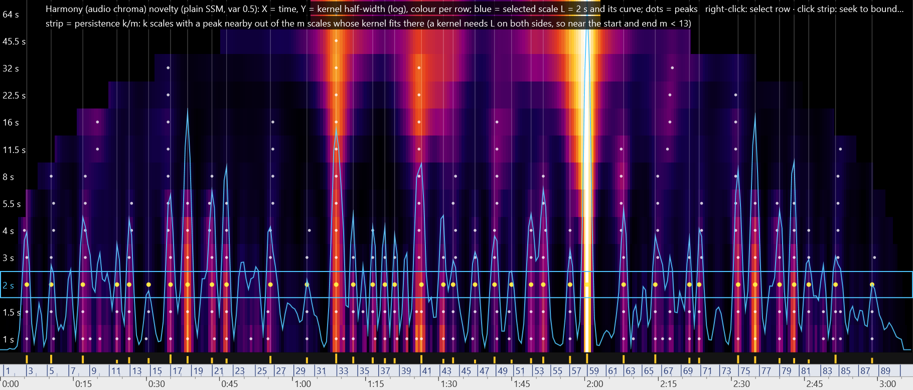
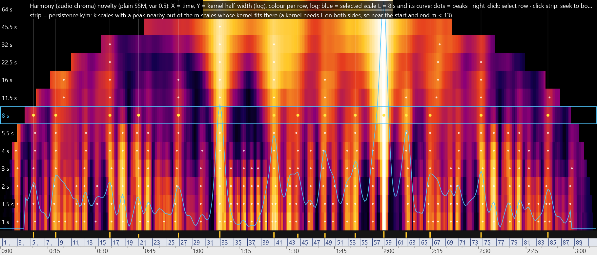

Novelty
The question: where does something change, and how big a change is it?
A checkerboard slides along the diagonal of the self-similarity matrix and asks, at every moment, whether the music before is one thing and the music after another.
With a small L it sees small changes (a new figure, a new chord); with a large L only large ones (a new section). There is no right L, so the view shows thirteen of them, from 1 to 64 seconds.
 1234567891011
1234567891011- Rows: one L each, small at the bottom, large at the top.
- Blue outline: the selected row, here L = 8 s. Right-click another row to select it.
- Blue curve: the novelty of the selected row, drawn over the whole picture. Its height belongs to itself, not to the rows behind it: the top of the picture is its own maximum.
- Yellow dots: the peaks of the selected row, the boundary candidates.
- White dots: the peaks of the other rows.
- Faint vertical lines: the selected row's peaks, extended so you can see which other rows have dots on them.
- A bright column through all rows: a change visible at every scale. A structural boundary.
- A bright column only at the bottom: a small change, a detail of texture or harmony.
- Yellow ticks in the strip: persistence. The taller, the more scales see this boundary.
- Black staircase at the sides: excluded. The checkerboard needs L seconds on both sides and would hang over the edge.
- Flat start and end of the curve, and the jump next to them: the excluded zone ends. The jump is not a boundary, and no dot is put there.
Persistence, the number k/m
Hover over a peak, or press Peaks: you will read, for example, 13/13 or 7/12. The second number is how many scales can see that moment (near the ends the large ones cannot). The first is how many have a peak close by. September's strongest are the start of the middle part and the reprise:
| Peak (L = 8 s) | Bar | Height | Persistence | The experts' key change nearby |
|---|---|---|---|---|
| 1:09.0 | 33 | 0.546 | 13/13 | to E minor at 1:09 |
| 1:26.0 | 41 | 0.412 | 11/13 | to C♯ minor at 1:26 |
| 1:33.5 | 45 | 0.248 | 8/13 | to E♭ minor at 1:30 |
| 1:42.0 | 49 | 0.346 | 9/13 | to E minor at 1:40 |
| 1:51.5 | 54 | 0.297 | 9/13 | to B major at 1:51 |
| 2:00.5 | 59 | 1.000 | 13/13 | back to G major at 2:00 |
The program knows nothing about keys, yet in the middle part its peaks fall on or near the experts' key changes. In the first section it also marks smaller changes that are no section boundaries (0:10, 0:17, 0:34 and others): novelty finds changes, and you decide which of them matter.
Try other scales


| Looks like | What it is | How to read and use it |
|---|---|---|
| Blue outline around a row | The selected scale. | |
| Blue curve | The novelty of the selected scale. Compare its peaks with each other, not with the rows. | |
| Yellow dots | Peaks of the selected scale. | |
| White dots | Peaks of the other scales. | |
| Faint vertical lines | The selected peaks, carried through all rows. | |
| Yellow ticks in the bottom strip | Persistence k/m of each selected peak: full height means every scale that can see it does see it. Click one to jump there. | |
| Black steps at left and right | Excluded edges. Nothing can be said there. | |
| Colour | Novelty, each row scaled to its own maximum (per row) or all rows to one (global). |
Levers worth knowing
- scale: the selected row. Start at 8 s; use 16 to 32 s for sections, 2 to 4 s for details.
- offset and min height: higher means fewer, clearer peaks.
- SSM plain / enhanced: plain is right for changes. Enhanced favours repetition and blurs the blocks novelty needs.
- exclude edges: leave it on.
- Write lanes saves the curve and the boundaries as lanes under the piece.
Read more
- J. Foote, Automatic audio segmentation using a measure of audio novelty, ICME 2000: the checkerboard kernel
- FMP C4S4: novelty-based segmentation
- FMP C6S1: peak picking
- FMP C4S4: structure features (another way to find boundaries, not in the Studio)
- Nieto, Mysore, Wang and Smith, Audio-based music structure analysis: current trends, open challenges, and applications, TISMIR 2020